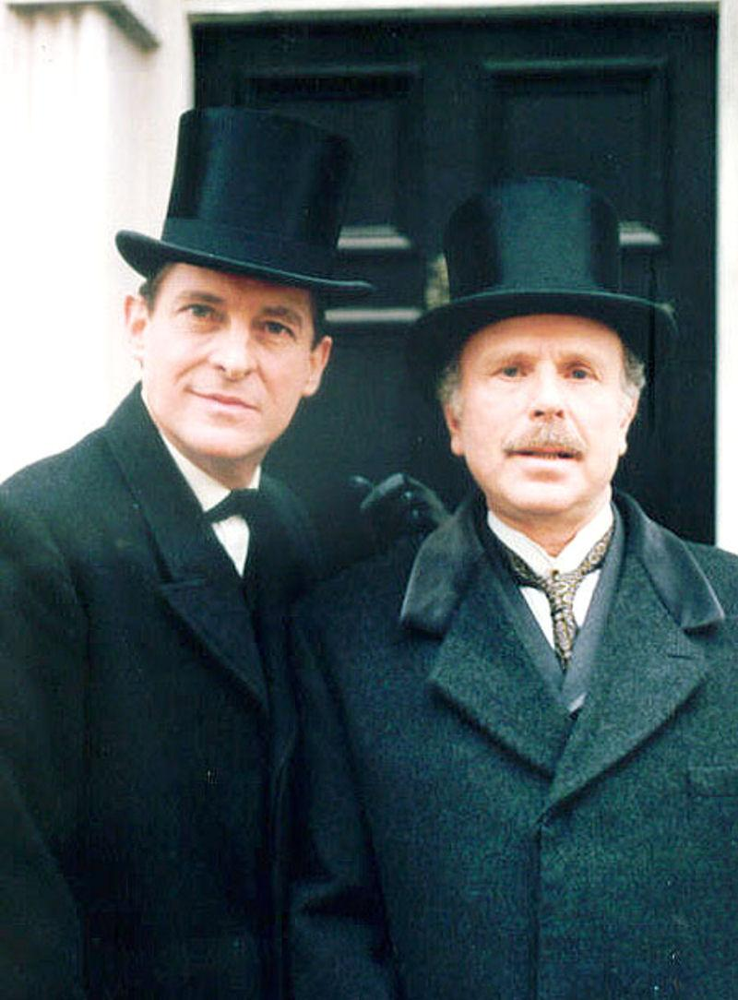

| |
حس و حال برگشتن از دنیای مردهها را دارم! بیشتر از سه سال از تاریخ پست قبلی من میگذرد ... خواستم خبر شروع پخش سریال «ماجراهای شرلوک هلمز» از شبکهی تماشا را بدهم؛ هر شب ساعت 23 روی آنتن میرود و دو شب متوالی است برای من بهانهای شده تا با جرمی برت نازنین و طنین صدای بهرام زند (دوبلور شخصیت شرلوک هلمز) تجدید خاطره کنم و کیفور شوم. اگر این اولین باری است که اسم سریال «ماجراهای شرلوک هلمز» به گوشتان میخورد، باید بگویم در نظر خیلی از طرفداران شرلوک هلمز (از جمله من و مدیر!) این سریال خوشساختترین اقتباس از داستانهای این شخصیت به قلم آرتور کانن دویل است. جرمی برت در بازهای ده ساله و در چهل و یک قسمت، حتی با وجود اوضاع و احوال بیمارش در سالهای آخر زندگی، در قامت شرلوک هلمز در کنار جمعی بهیادماندنی از بازیگران و دستاندرکارانِ پشت صحنه، ظاهر شد و برای چند نسل خاطره آفرید.

امشب نوبت پخش اپیزود «یاقوت کبود» بود. سراغ آرشیوم در هارد رفتم تا عکسی برای این پست انتخاب کنم ... و یادم افتاد ... بعد از چند فولدر بالا و پایین کردن، تمامی قسمتهای سریال ماجراهای شرلوک هلمز را به شکل دوزبانهی انگلیسی و فارسی و با کیفیتی خوب پیدا کردم. یادم افتادهبود که این آرشیوِ کامل را چند سال قبل از دوستی هدیه گرفتهبودم؛ ولی آنقدر در صفِ تماشاییهای زندگی عقب ماند که از یاد رفت ... حقیقت تلخ است؛ دیگر آن شوقِ سالهای گذشته را که مرا هر روز به پای تلویزیون میکشاند تا تک تک قسمتهای «ماجراهای شرلوک هلمز» را ضبط و آرشیو کنم، ندارم. زمان با حوصله و ذره ذره، چنین احساساتی را با خودش میبرد ... مثل دانههایی که در ساعتی شنی، به جبر جاذبه سقوط میکنند. ما روزهای خوشی داشتیم؛ ما یعنی من و نویسندههای دیگر این وبلاگ و پاهای ثابت دیگری که بخش نظرات پستها را برای خودمان پاتوق کردهبودیم. مثل خیلی از طرفداران دوآتشهی شرلوک هلمز، من هم میخواستم هولمز باشم! بعد از چند صباحی گردش در این وبلاگ، به سرم زد من هم وبی تأسیس کنم که عنوانش شد «شرلوک پدیا» و اسم مستعار منِ نویسنده در زیر نوشتههای آن بلاگ هم «Sherlock Holmes» بود ... از سرنوشتش همین را بگویم که حالا از دسترس خارج است و خاک میخورد. بعدها که من هم به تیم نویسندگان این وبلاگ اضافه شدم، اسم مستعار «Sherlockpedia» را انتخاب کردم؛ برای پیشگیری از ایجاد تشابه اسمی بین من و مدیر که آن روزها «شرلوک هلمز» بود؛ و علت مهمتر اینکه بچههای اینجا هم از روی عادت مرا «پدیا» صدا میزدند. یادم هست اوایل تأسیس «شرلوک پدیا»، زیر یکی از پستهای اینجا، نظری خطاب به مدیر نوشتم که «اگه اهل رقابتی سر بزن» (!) و مدیر جواب داد «اهل رقابت نه، ولی اهل دوستی چرا» ... و با اینکه هیچ وقت چهرهی هیچ کدام از اهالی خیابان بیکر را ندیدم، دوستان خوبی بودیم. «شرلوک هلمز» وجه مشترک بزرگی از زندگیمان بود و جرقهی شور و شوقمان را سریال Sherlock، با بازی بندیکت کامبربچ، زدهبود. آخ از آن روزهای بعد از پخش فصل دومِ Sherlock که چندین و چند پست برای آن پایان غیرمنتظره نوشتیم و نظریهپردازی کردیم ... به این پاتوق کوچکمان حسابی دلخوش بودیم. حالا در نگاه این روزهای من، «چیز»ها زیادی بزرگ شدهاند و آدمها پراکنده. دلتنگ شدن برای خاطرات خوب گذشته، کلیشهای نبود که امشب بخواهم از آن بنویسم ولی همیشه پستهای با کلمات کم به نظرم ناقص آمده ... و بعد از نوشتن چند خط اول این پست، حرف پشت حرف آمد و به اینجا رسید. قرار بود اول فروردین امسال، پستی برای تبریک عید و خداحافظی از دوستان قدیمی اینجا بنویسم. چند سطر به تکمیلش ماندهبود که با امروز و فردا کردن فراموش شد. فعلا آن پست طلبتان :) میدانم؛ زندگی در این روزها به روال گذشته نیست ... شاید این یک ساعتهای شبانه با جرمی برت برای هر طرفدار جدید و قدیم شرلوک هلمز، فرصتی باشد برای چند لحظه جدا شدن از دستاندازهای زندگی و لذتبردن از آن نگاههای عمیق و خندههای ظریف. در کند و کاوی برای نوشتن این پست گذرم به سایت «archive.org» افتاد که تمامی قسمتهای سریال را به زبان انگلیسی و به رایگان، برای تماشا و دانلود گذاشته که میتوانید به آن هم سری بزنید: «این لینک» و خبر خوش دیگری هم برای طرفداران هلمز دارم؛ با اینکه این خبر چندان تازه از تنور درنیامده و حرف یک سال پیش است؛ ولی احتمال دارد بعضی مثل خود من که دیر خبردارشدم آن را نشنیدهباشند: چهار کتابِ حاوی مجموعا بیست و چهار داستان کوتاهِ شرلوک هلمز با ترجمهی مرحوم کریم امامی دوباره منتشر شدهاست؛ این بار توسط «انتشارات هرمس» و در دنبالهی سری «کتابهای کارآگاه». اولین جلد از این چهارتا؛ یعنی «رسوایی در بوهم و پنج داستان دیگر»، اولین بار در سال 1372 و توسط انتشارات «طرح نو» چاپ شد و بعد از بازهای از توقف فعالیت نشر «طرح نو» و فوت آقای امامی، مدتها این چهارگانه به دست فراموشی سپرده شدهبود تا همین یک سال پیش. ویژگیای که این ترجمهها را به یادماندنی میکند، نثر و ترجمهی دوستداشتنی آقای امامی و تصاویرِ اصل کتابها، یعنی طراحیهایِ اثر سیدنی پجت است. میتوانید متن این خبر را از « این لینک » بخوانید.
ایّامتان به کام و پر از دلخوشی.
شنبه 3 خرداد 1399ساعت : 23:14|
نویسنده : Sherlockpedia |
|
فیلم " آقای هولمز " به کارگردانی بیل کندون و با ایفای نقش یان مک کلن در نقش شرلوک هلمز حدود یک سال و نیم پیش اکران شد . این فیلم که بر اساس رمانی به نام " A Slight Trick of the Mind " (یک ترفند ریز ذهن ) ساخته شده ، شرلوک هلمز را در 93 سالگی به تصویر می کشد ؛ زمانی که در تلاش است ماجرای پرونده ای را به یاد بیاورد ...
ادامه مطلب
دوشنبه 8 آذر 1395ساعت : 00:57|
نویسنده : Sherlockpedia |
|
لسترید : " ما در اسکاتلندیارد به شما حسادت نمی کنیم ؛ نه خیر آقا ، ما به شما افتخار می کنیم . و اگر فردا سری به ما بزنید ، تک تک افراد ، از جوانترین پاسبان تا مسن ترین بازرس مفتخر خواهند بود که دستتان را بفشارند . " شرلوک هلمز : " ممنونم ... ممنونم . "
بازگشت شرلوک هلمز - شش ناپلئون
پ.ن : بابت غیبت طولانی ( طوری که اکثریت منو یادشون نیست یا نمی شناسن  ) عذرخواهی می کنم . امیدوارم بعد از این تا حدودی بتونم جبران کنم ... ) عذرخواهی می کنم . امیدوارم بعد از این تا حدودی بتونم جبران کنم ...
شنبه 29 آبان 1395ساعت : 10:57|
نویسنده : Sherlockpedia |
|
در این پست ، کتاب " شرلوک : شرح ماوقع " 1 را یک بررسی کوتاه می کنیم و این خبر خوش را
هم برایتان دارم که در انتهای همین پست ، راهنمای خرید کتب خارجی ای که در
ایران در دسترس ما نیستند را برایتان حاضر کرده ایم تا این آرزوی دور از
دسترس تحقق یابد ، باشد که خوشحال شوید
!
در نقد وبسایت
Sherlockology خواندم : " کتابی که هر طرفدار شرلوکی می خواهد داشته باشد "
. این جمله کاملا درست است ! ولی آیا " نیاز " دارد داشته باشد ؟ امیدوارم
که در انتهای این پست ، با اطمینانی نسبی پاسخ به این سوال را بدانید . (
نقد و بررسی در ادامه ی مطلب )
ادامه مطلب
جمعه 8 اسفند 1393ساعت : 15:52|
نویسنده : Sherlockpedia |
|
فیلمبرداری قسمت
ویژه ی فصل چهارم Sherlock ، پس از یک ماه بالاخره به اتمام رسید . این
قسمت که تایید شده در حال و هوای لندن دوران ویکتوریایی اتفاق می افتد ،
برعکس قسمت های پیشین سریال ، در بریستول و اطراف آن فیلمبرداری شد . حال
این قسمت مراحل فنی بعد از فیلمبرداری را پشت سر می گذارد . جزییات اندکی
به بیرون درز پیدا کرده و تاریخ پخش قسمت هم هنوز به طور قطعی
مشخص نیست با این حال انتظار می رود که در پایان سال 2015 و در کریسمس پخش
گردد . فیلمبرداری فصل چهارم بعد از مدتی شروع خواهد شد
.
سازندگان سریال تصویر زیر را توییت کرده اند
:
" یکی دیگه هم تموم شد "
!
جمعه 24 بهمن 1393ساعت : 12:55|
نویسنده : Sherlockpedia |
|
شرلوک هلمز یان مک کلن در کنار هفت فیلم دیگر به جمع هفت فیلم رقابتی جشنواره ی فیلم برلین اضافه شدند و برای اولین بار در طول این فستیوال به نمایش درخواهد آمد . این فستیوال فیلم برلین 2015 در ماه فوریه شروع می شود و سرپرست داوران امسال هم ، دارن آرنوفسکی است .
اولین عکس از یان مک کلن سرصحنه ی فیلم برداری هم منتشر شده است :
برای اطلاعات بیشتر به پست " آقای هولمز " مراجعه کنید .
پنجشنبه 25 دی 1393ساعت : 16:42|
نویسنده : Sherlockpedia |
|
" آقای هولمز " فیلمی است که شرلوک هلمز(یان مک کلین) را در دوران پیری به تصویر می کشد . یک فیلم سینمایی به کارگردانی بیل کندون . حالا فیلمبرداری به پایان رسیده و پرونده ای در مورد این فیلم و روند ساختش تهیه کردیم . پس اگر مشتاق شدید ، ادامه ی مطلب منتظرتان است !
ادامه مطلب
چهارشنبه 19 آذر 1393ساعت : 17:12|
نویسنده : Sherlockpedia |
|
اندرو اسکات در پاسخ به خبرنگاری که از او راجع به نقشش در فیلم تازه ی جیمز باند پرسید :
یکشنبه 16 آذر 1393ساعت : 16:05|
نویسنده : Sherlockpedia |
|
شرلوکولوژی ، این بار رقابتی تازه ترتیب دیده تا
شرلوک شناس ها ، برای کسب جوایزی ( که عمدتا برای ما فقط در حد آرزوست ) ،
نه قسمت شرلوک را زیر ذره بین بگیرند . ماجرا از این قرار است که در طول نه
روز ، نه بخش مسابقه که مربوط به نه قسمت سریال Sherlock است برگزار می
شود و شما هر روز باید به سه سوال راجع به قسمت مورد نظر پاسخ بدهید .
امروز سومین روز است و وقت نیز تنگ پس تا دیر نشده حضور خود در مسابقات را
اعلام نمایید .1اما جوایز این
رقابت ، نه کپی از Sherlock :
Chronicles ( یکی برای
هر روز) بوده و به عنوان یک امتیاز اضافی ، شش تا از نه کپی امضا شده
هستند ! سه تا توسط بندیکت کامبربچ و سه تا توسط مارتین فریمن . و این
کاملا بستگی به شانس و قانون احتمالات دارد که کدام برنده ، کدام کپی را
خواهد گرفت و ربطی به امتیاز برنده ها ندارد .
و این
تنها جایزه ی این رقابت ها نیست و با مراجعه به صفحه ی توضیح در خود
وبسایت می توانید ببینید که دیگر جوایز چه مواردی
هستند ... اگرچه اسکن یکی از صفحات این کتاب را پس از مسابقه ی آنروز می
توانید مشاهده کنید .
توضیحاتی که باید راجع به
Sherlock : Chronicles بدهم هم این است که این کتاب ویژه شامل مصاحبه هایی
با بازیگران مختلف سریال ، دست اندرکاران و توضیحاتی راجع به صحنه های حذف
شده و ... است که البته می توانید از طریق وبسایت آمازون از این لینک هم آن را پیش خرید کنید (
تاریخ پخش عمومی کتاب پانزدهم آبان ماه است )
.

1.
اگر پیش از این در مسابقات این وبسایت شرکت کرده بودید ، می توانید با همان
ایمیل و پسورد وارد شوید . اگر پسورد خود را فراموش کردید ، می توانید
گزینه ی درخواست بازیابی پسورد را نیز در این وبسایت انتخاب کنید . در غیر
این صورت مجبور به ثبت نام هستید .
پ.ن : دو. صفحه از کتاب را هم
در ادامه ی مطلب قرار دادیم :
...
ادامه مطلب
جمعه 9 آبان 1393ساعت : 16:30|
نویسنده : Sherlockpedia |
|
هفته ی پیش ،
سالروز تولد یکی از به یاد ماندنی ترین واتسون ها بود ... ادوارد هاردویکی
1 که هشت سال (
طی ایفای نقش در سه فصل ) دکتر واتسون ، همراه و دوست وفادار شرلوک هلمز (
با بازی جرمی برت 2 ) را به تصویر کشید .
این بازیگر پرکار ، در سن 78 سالگی ، در سال 2011 چشم از جهان فروبست
.

برنامه ی " این ، زندگی
شماست " 3
، یک مستند تلویزیونی است که به مطالعه ی سرگذشت و زندگی نامه
ی مهمان آن قسمت از روی یک کتاب قرمز بزرگ می پردازد و همچنین پیش از دعوت
به برنامه ، آن ها را غافلگیر می کند . یکی از مهمانان نیز همین دکتر
واتسون خودمان بود که به شکلی دیدنی سورپرایز شد ، آن هم با همکاری جرمی
برت !
توضیح بیشتری نمی دهم تا غافلگیری شما نیز خراب
نشود ... پس پیشنهاد می کنم این ویدیو را از لینک زیر از مدیافایر ، دانلود
کرده و اگر سوالی در این باره داشتید ، در بخش نظرات اعلام کنید تا توضیح
داده شود .
- Edward
Hardwicke
- Jeremy
Brett
- This is Your
Life
پ.ن :
پنجشنبه 23 مرداد 1393ساعت : 11:23|
نویسنده : Sherlockpedia |
|
|
|
|